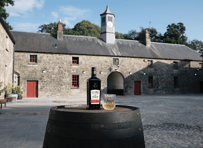
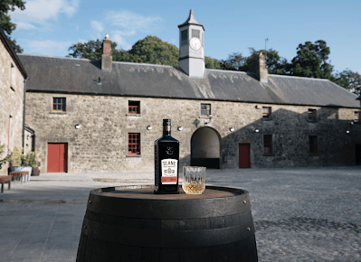
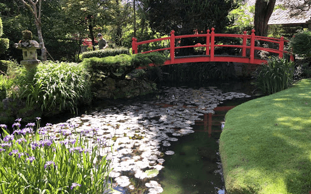
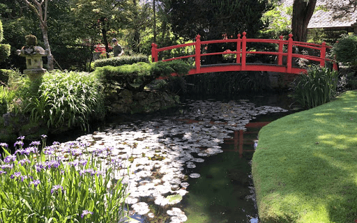

“Nothing ever becomes real till it is experienced.” ― John Keats
While we are firm believers in the positive power of a Shared Experiences we do acknowledge that one shoe doesn't fit all and it's good to add your own indviduality to your overall Experience.
View the options below and complete our request form and we'll get back to you with your own customised quote. If there is a particular activity that we don't have listed but that you really want to include, please do let us know and we will certainly do our best to help you arrange it.
Customise Your Tour!
Day One:
Walking Food Tour of Dublin & Private Whiskey Tasting
Today is really an arrival day to allow everyone to arrive in their own time as we understand that some of you will be travelling in from further afield than others. However for those of you who are able to arrive a little earlier in the day we do have some fun activities planned to introduce to your fellow tour companions while getting a taste of what our capitol city has to offer.
We'll meet in the hotel bar at 2pm and enjoy a complimentary glass of prosecco before heading out for a 3 hour walking food tour of some of Dublin's hidden gems and of course a few old reliables. We should be back at the hotel by 5:30pm and while we doubt you'll be looking for a big dinner after having the delicious treats you will have sampled on the food tour, we will give you a few hours to rest and relax. We'll re-group in the hotel reception area at 8pm and take a short transfer over to the Church Bar were we have an area reserved for a private Whiskey Tasting hosted by Glen from Distilled Ireland.
The Whiskey Tasting event lasts approx. an hour and half, so at 10pm your tour leader will arrange the transfer back to the hotel, although if some of you wish to sample a little more of Dublin's lively weekend nightlife then you can of cousre make your own way back to the hotel a little later.
- Hotel: The Alex (4 Star)
- Tours: Walking Food Tour
- Tastings: Private Whiskey Tasting
- Meals: None
Included:


Day Two:
Ardgillan Castle, Boyne Brewhouse & Boann Distillery
After breakfast in The Alex we will depart for our first stop of the day which is Skerries Mills, approx. 30 minutes from Dublin. During this time your Tour Leader will do a brief Tour Induction and run through everything you need to know about this week-long tour.
Upon arrival at Skerries Mills we will be met by our guide who will take us on a 50-minute tour that includes seeing the water wheel in action and the opportunity to try your hand at stone grinding flour. We’ll also get to view inside both windmills and if weather conditions are right, they are both operational, which is an impressive sight to see.
After you’ve had a chance to browse the gift-shop we will board the coach to Ardgillian Castle, a short distance up the coast. The castle dates back to the 18th century and after our 1-hour guided tour you will have approx. an hour and a half of free time to explore the beautiful grounds of the demesne, take a stroll down to the stunning beach or to have a bite to eat in the café.
Around 2pm we make the short journey up the coast to the historic town of Drogheda on the banks of the river Boyne. We will visit Boyne Brewhouse and Boann Distillery, both owned by the Cooney family. Here you are in for a special treat as not only will we have a guided tour of the Brewhouse & Distillery, you will also dine here with a sampler tray from the Brewhouse, followed with a Whiskey tasting from the Distillery.
- Hotel: The D Hotel (4 Star)
- Tours: Skerries Mills & Ardgillian Castle
- Tastings: Boyne Brewhouse & Boann Distillery
- Meals: Breakfast & Dinner
Included:


Day Three:
Battle of the Boyne, Listoke Gin Distillery, Carlingford
After breakfast we will board the coach and follow the Boyne River upstream to the site of The Battle of the Boyne, which was fought between William of Orange and James II in July 1690. It was the last time two crowned kings of England, Scotland and Ireland faced each other on the battlefield. William of Orange won a crushing victory, which secured the Protestant ascendancy in Ireland for generations.
At approx. 10:45am we will make our way to Listoke Distillery & Gin School where we will have a private Gin making lesson. And guess what? At the end of the 2-hour session not only will you have produced your own blend of Gin but you get to take a bottle of it home with you! After all your hard work distilling Gin we think you will have worked up an appetited, so we have arranged for the Distillery to lay-on one of the sumptuous lunches for us, consisting largely of local produce from the surrounding Boyne Valley.
We depart Listoke at 2pm and head a little further up the coast to the picturesque fishing village of Carlingford, known for it’s Oysters. Despite its size there are many optional activities for you to choose from so the afternoon and evening is yours to do as you please. Although why not check-out our Add-On’s section which contains some of the optional activities that we can help you pre-book.
- Hotel: Four Seasons Hotel (4 Star)
- Tours: Battle of the Boyne
- Tastings: Listoke Gin Distillery
- Meals: Breakfast & Lunch
Included:


Day Four:
Carlingford Brewing, Newgrange UNESCO site & Slane Castle Distillery
This morning, after we finish breakfast, we’ll start our day with a guided tour of the local award-winning craft brewery, Carlingford Brewing Co. At the end of the tour a tasting of their various brews is of course included.
From here we head back to the Boyne Valley for a guided tour of the UNESCO World Heritage site of Newgrange, a Neolithic Passage Tomb which dates back to around 3200 BC, making it older than Stonehenge and the Egyptian pyramids. At the end of the guided tour you’ll have 45 minutes free time to have a look around yourself or to grab a bite to eat in the canteen of the visitor centre.
In the afternoon we travel to the village of Slane, home to Slane Castle which has hosted some of Ireland’s most legendary outdoor concerts with bands such as The Rolling Stones, GUNS N’ ROSES and the Foo Fighters playing to crowds of upto 80,000. However, in recent years Slane has also become home to Slane Distillery which is the next stop on our itinerary.
- Hotel: Conyngham Arms Hotel (3 Star)
- Tours: Newgrange (UNESCO World Heritage Site)
- Tastings: Carlingford Brewing & Slane Distillery
- Meals: Breakfast & Dinner
Included:

 

Day Five:
Boyne Valley Cheese, Trim Castle & Bru Brewery
Our first stop today is at Mullagha Farm which is run by Michael and Jenny Finegan as a mixed farm, farming cattle, corn and 250 milking goats. The goats are milked twice a day all year-round providing milk for their cheese business. Their award-winning Boyne Valley Blue is a semi-hard pasteurised blue veined goats’ cheese. It is the only one made in Ireland and is even rare to find across Europe. It is matured for at least 3 months to acquire the correct blend of flavours.
Mid-morning, we will head to the town of Trim where we will meet our local tour guide for a guided tour of Trim Castle which dates back to the 12th Century and is surprisingly intact for its age! While you will learn all about its fascinating history during the tour, here’s one fun fact we’ll share with you now, Trim Castle was heavily featured in the 1995 film Braveheart, which stared Mel Gibson. After the tour you will have a few hours to explore the town of Trim or why not pop into one of the many great gastropubs for some traditional “pub grub”!
While you are exploring, we will pre-check you into Trim Castle Hotel as we will be staying in Trim tonight. The hotel overlooks the Castle and at night when the Castle is lit-up the views from the hotel are stunning. At 6pm the group will meet up again in the hotel reception and we will make our way to the nearby Bru Brewery for a guided tour of yet another awarding craft brewery. Tonight we will dine in the relaxed setting of the brewery, giving you the opportunity to sample a few more of their excellent beers.
- Hotel: Trim Castle Hotel (4 Star)
- Tours: Boyne Valley Cheese & Trim Castle (Featured in Braveheart )
- Tastings: Bru Brewery
- Meals: Breakfast & Dinner
Included:


Day Six:
Castletown House, Birth Place of Guinness & Rye River Brewing Co.
After a leisurely breakfast we will board our luxury min-coach once again and we will make the 45-minute journey through the rolling green hills of the beautiful Irish countryside to the historic town of Celbridge, in neighbouring County Kildare. Our first stop will be at the impressive Castletown House, which is a Palladian country house built in 1722 for William Conolly, the Speaker of the Irish House of Commons. It is often described as Ireland’s only true Palace! During this you will start to see the connection between some of the other sites that we have already visited on our tour and the intriguing and varied history of Ireland’s Ancient East will start to become a little clearer to you.
Following our tour of Castletown House another local tour guide will meet us at the front steps of Castletown to take us on a very special 3-hour walking tour of Celbridge, so make sure you have your walking shoes on today! However, don’t be worried as the distance covered is not huge, the ground is all flat and the tour is so enjoyable that you won’t even notice the time passing by. Plus, we will of course make lunch during the tour, but this is no ordinary lunch stop, we will visit the bar that now stands on the site of a former brewery, where the famous Arthur Guinness was born! And what may surprise you is that not many people know that Arthur Guinness was born in Celbridge, and in-fact was laid to rest in Oughterard Cemetery on the outskirts of Celbridge. Therefore, his birthplace is not overrun with bus loads of tourist everyday of the week and staff of the bar are more than happy to let you try your hand at pulling your own pint of “the Back Stuff”.
After we’ve completed our walking tour, we will check-in to Celbridge Manor Hotel and you will have a little time to rest and freshen up before dinner. Tonight, we will dine in one of the local restaurants in the heart of this delightful village. Following our dinner, we have yet another treat in store for you, we’ve arranged for a late evening tour of the multi-award-winning Rye River Brewing Company which is also located in Celbridge. The team here are very proud of the reputation that they have worked hard to establish over recent years and these guys always want to out-do any of the other brewer tours, so we’re sure that they will pull-out all the stops to ensure that they are your favourite brewery tour!
- Hotel: Celbridge Manor (4 Star)
- Tours: Castletown House & Guided Walking Tour
- Tastings: Rye River Brewing Co.
- Meals: Breakfast & Dinner
Included:


Day Seven:
Lilly O'Brien's Chocolate Factory, The National Stud & Glendalough Distillery
Our first stop today is at the Chocolate Factory of the luxury Irish chocolate brand Lilly O’Brien’s. We will tour the factory, learn about the chocolate making process and of course sample some of the delicious products. We will also have the opportunity to craft and decorate some of our own chocolate creation which you then get to take home, or if you are a Chocoholic, they might just about last until we are back on the coach!
From here we’ll head over to the Irish National Stud & Japanese Gardens. Ireland is famed for the quality of our horses and The Irish National Stud is a Thoroughbred horse breeding facility in Tully, County Kildare, and some of the world’s finest racehorses have come from this stud. Following our Guided tour of the Stud you will have 2-hours to explore the Japanese Garden and the rest of the complex at your own pace and we highly recommend the on-site restaurant if you fancy a bite of lunch.
In the afternoon we will take the scenic route across the Wicklow Mountains on our way to Glendalough Distillery. Along the way we’ll make a few stops for some quick photo ops at locations you may recognise from several big budget Hollywood films that have been filmed in this area over the year, such as Braveheart and our favourite, PS I Love You! After our distillery tour and tasting session we’ll make our way to the sumptuous 5-star Druids Glen Hotel in time for our final group dinner!
You may want to check-out some of our Add-on options over in our customise section, the late evening spa treatments tend to be a popular option here!
- Hotel: Druids Glen (4 Star)
- Tours: Lilly O'Brien's Chocolate Factory & Irish National Stud
- Tastings: Glendalough Distillery
- Meals: Breakfast & Dinner
Included:
 

Day Eight:
Free morning in Glendalough (Wicklow National Park) & return to Dublin
After another fabulous breakfast that will have you fuelled for the day, we will check-out of our haven of tranquillity and relaxation for our final stop on what we trust has been a wonderful week-long tour. This morning we will visit Glendalough Lakes. We’ll meet our guide at the visitor centre and before touring the nearby monastic site. You then have the rest of the morning free to enjoy a stroll around the upper and lower lakes, for the more active a short hike to the nearby waterfall or if it’s one of our sunnier days grab a coffee and chill by the lakeshore and soak up the natural beauty of this stunning area, which is often referred to as “The Garden of Ireland”.
We’ll have you back in Dublin just after lunch and we can say our final goodbyes, although we prefer to say until we see you again as we are sure that after the week of experiences you have just had, you will definitely want to come back to Ireland again!
If you do have a little extra time available, please do have a look at our Add-on options as we are only too happy to help you extend and customise your tour.
- Tours: Glendalough National Park
- Meals: Breakfast
Included:
Price, Inclusions & Exclusions
Inclusions:
- 7 Nights Accommodation
- 7 Breakfast's, 1 lunch & 5 dinner's
- Experienced Tour Leader (Certified First Aid skills)
- Air-conditioned Mini-coach
- Licensed Tour Guides at each Historical site
- All Entrance Fees (except for optional activities)
- Beverages during "tasting" experiences (limited)
Exclusions:
- Airfare to and from Ireland
- Airport Transfers (can be arranged at extra cost)
- Entry Visa (if required)
- Travel/Health Insurance (highly recommended)
- Personal spending money
- Meals not specified in Inclusions
- Beverages not specified in Inclusions
- Tips (at your own discretion)
Price From 1,160*
* Please note that this price is per person based on two-sharing, for the Standard Tour package and doesn't included any of the optional or Add-on activities. (A Single Supplement does apply)